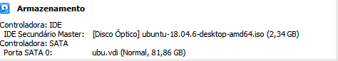

Instalação da Máquina Virtual Ubuntu
A primeira coisa que você deve fazer antes de baixar o Ubuntu é baixar o Virtual Box.
Para isto entre no site, e aperte na opção "Windows hosts".
Não há nenhum segredo para a instalação, basta ir seguindo o processo. Depois de instalado, precisas baixar a ".iso" do Ubuntu, que pode ser encontrada no site da Ubuntu.
Quando você abrir o site, role um pouco para baixo e aperte neste botão verde:
Este processo pode demorar um pouco mais.
Depois que a ".iso" estiver baixada, abra o Virtual Box e aperte em "novo".
Selecione Ubuntu e aperte em "próximo"..

Coloque no mínimo 1024MB para que o Ubuntu possa rodar e aperte em "próximo".
Crie um novo disco rígido virtual e aperte em "próximo".
Selecione VDI e aperte em "próximo".
Selecione "Dinamicamente Alocado" e aperte em "próximo".
Coloque 80GB, mínimo 40GB e aperte em "próximo".
Vá no Disco Óptico e coloque a ".iso" que você baixou no site do Ubuntu.
Ele ficará assim:
Por fim, aperte em inciar.
Abrindo o Ubuntu...
Quando aparecer a primeira primeira página selecione a opção: "Instalar o Ubuntu".
No layout do teclado, selecione a opção "Portuguese (Brazil)", teste para ver se funciona e em aperte em "Continuar"
Posteriormente, selecione as opções "Instalação normal", "Baixar atualizações enquanto instala Ubuntu" e "Continuar"
Selecione "Apagar disco e reinstalar Ubuntu", em seguida "Instalar agora" e "Continuar"
Selecione o fuso horário, e em seguida "Continuar"
Por último, faça seu Login e salve com as últimas alterações, ele reninciará."
Este vídeo mostra como se baixa, está em inglês, mas é fácil de se adptar com os comandos dados acima.
Instalando o VSCODE
Abrir o Ubuntu Software
Pesquise VScode
Clique em instalar, e insira sua senha caso solicitado
Assim que finalizar a instalação, abra o programa
Abra o site e escolha a versão ".deb".